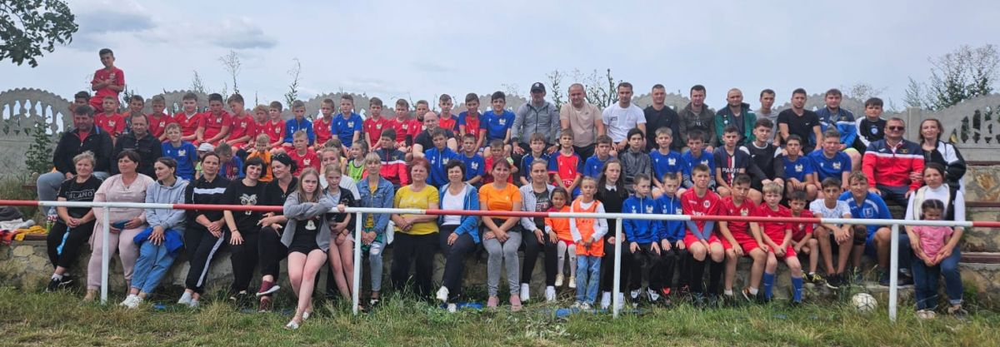

Primăria
| Date | Succese | Ordine | Contacte |
Interviu cu primarul satului Visoca raionul Soroca Grigorii Pleșca.
Turbine eoliene
În satul Visoca a început crearea unui parc eolian, care este primul de acest fel din raionul Soroca. Primele două turbine eoliene au fost deja ridicate pe dealul din preajma satului. Locul nu a fost ales întâmplător, iar satul Visoca este și după toponimul său recunoscut ca una dintre cele mai înalte culmi din regiune. Despre instalarea acestora s-a dus repede vestea în tot satul, iar unii care doar au auzit despre turbine eoliene le pot deja vedea și de-asupra satului lor. Până acum au fost instalate doar două astfel de turbine, iar antreprenorul vrea să mai aducă cinci pe care să le instaleze în preajmă. Deși această tehnologie poate părea nouă la prima vedere, strămoșii noștri utilizau energia eoliană de secole, când la morile de vânt măcinau făina.
Sportul în viața noastră
* Clubul de Fotbal ,,EFA Visoca’’
În sezonul 2021/22 în seria Nord a Diviziei B au evoluat formațiile EFA Visoca (locul 6) și FC Visoca (locul
10).
Astfel, Visoca a devenit prima localitate din mediul rural care participă cu două echipe în campionatul
național.
În anul 2018 omul de afaceri Ghenadie Mija a înființat o echipă de fotbal în satul de
baștină.
„De aproape 25 de ani m-am stabilit în Portugalia, iar în prezent sunt patronul unei firme de
construcții, povestește Ghenadie Mija. Casa părintească se află chiar peste drum de stadionul sătesc. Nu
întâmplător de mic copil am îndrăgit fotbalul. Până nu demult și singur practicam acest minunat joc. Cinci
ani în urmă am hotărât să fac ceva bun pentru satul de baștină și am fondat o echipă de fotbal. În anul 2018
ne-am înscris în campionatul raionului. Debutul n-a fost unul ușor. Am încheiat competiția pe locul 8 (din 9
participante), acumulând doar 10 puncte”.
Treptat visocenii s-au acomodat cu rigorile campionatului raional și în sezonul următor, cel din 2019, au
ocupat locul 5 cu următoarea linie de clasament: 14 meciuri, 7 victorii, 2 egaluri și 5 înfrângeri, cu un
golaveraj pozitiv 33-29 și 23 de puncte acumulate.
Deja în ediția 2020 echipa din Visoca a dat marea lovitură – a devenit campioana raionului Soroca și a obținut dreptul să joace în campionatul național.